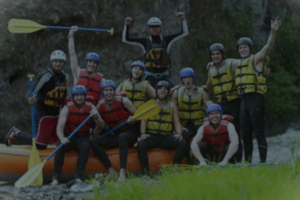

Our Mission

At White Water Rafting, our mission is to deliver unforgettable adventures on the river while keeping safety and fun in perfect balance. We believe every paddle stroke should build confidence, connection, and a little bit of adrenaline. Whether you're a first-timer or a seasoned rafter, we're committed to guiding you through the rapids with expertise, energy, and a smile.